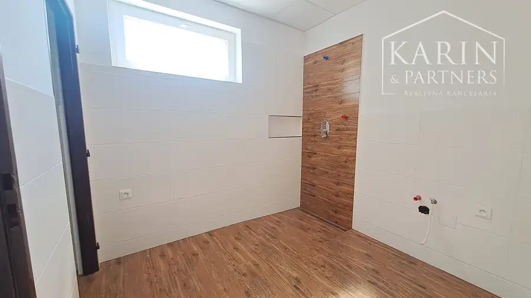
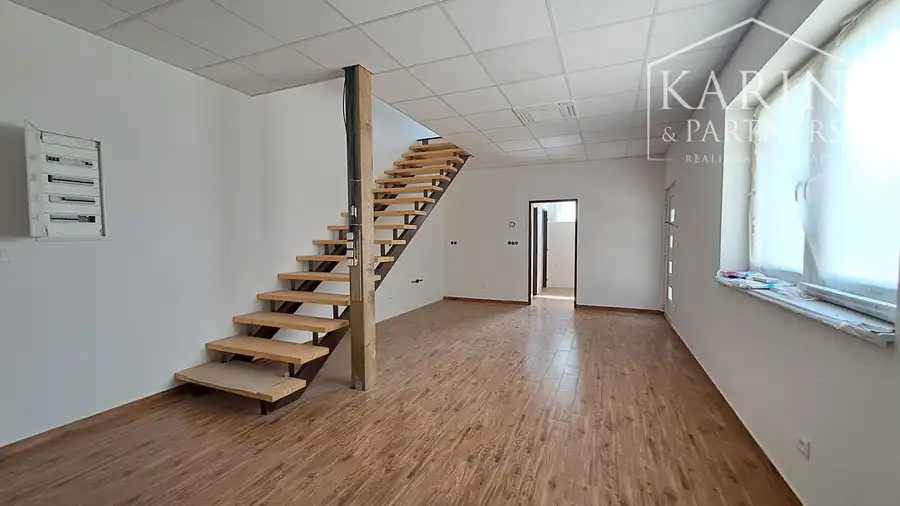
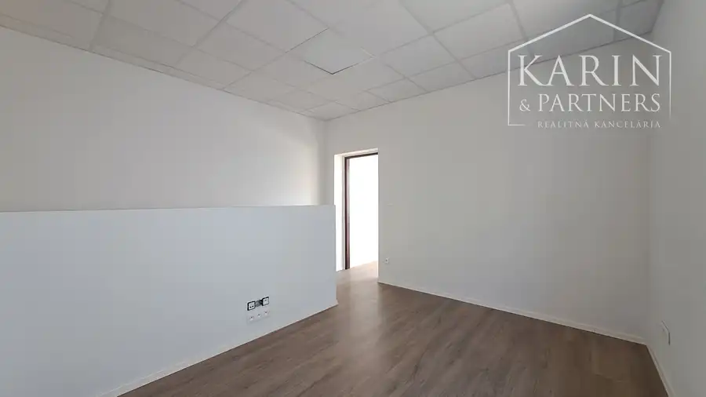
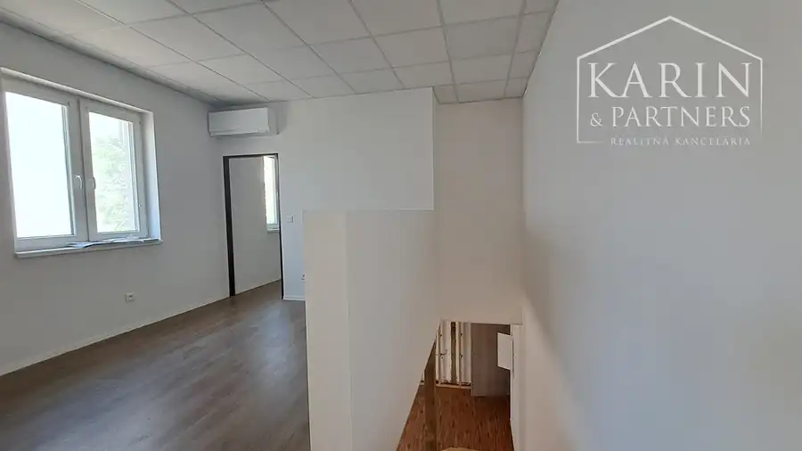
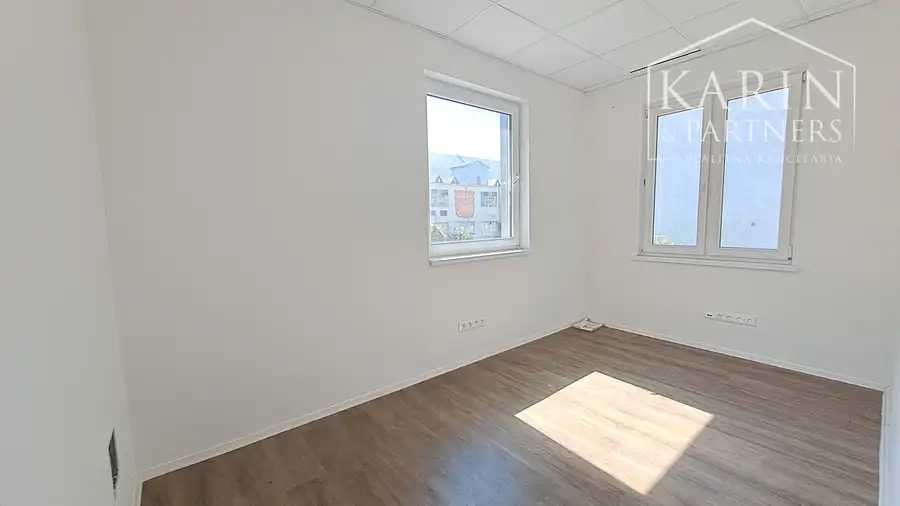
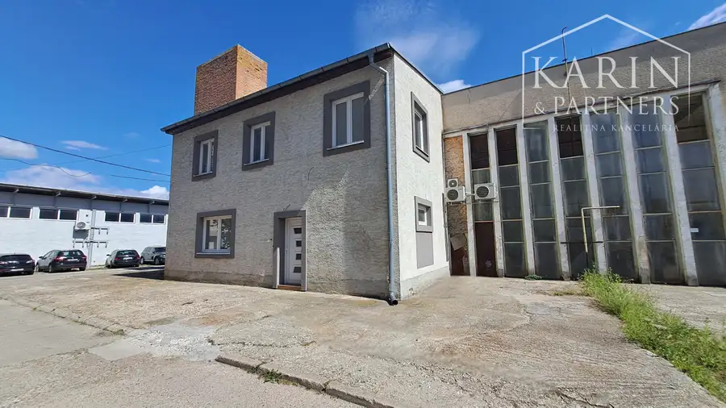

Prenájom kancelársko - obchodné priestory 208 m2, Piešťany
Piešťany






- Plocha208 m²
- StavKompletná rekonštrukcia
- VlastníctvoNevysporiadané
O nehnuteľnosti
Klimatizované kancelársko - obchodné priestory | 208 m2 | Piešťany Realitná kancelária KARIN & PARTNERS vám ponúka na prenájom moderné kancelársko - obchodné priestory v uzavretom areáli na Hurbanovej ulici v meste Piešťany. Priestory disponujú samostatným vstupom aj bránou, výbornou dostupnosťou a komfortným parkovaním priamo v areáli.Celková výmera priestorov je 208 m2 a vďaka flexibilnému dispozičnému riešeniu sú ideálne pre firmy hľadajúce kombináciu kancelárie, showroomu, skladu alebo ľahkej montáže. Priestory prešli kompletnou rekonštrukciou a ponúkajú reprezentatívne zázemie pre vaše podnikanie.Dispozícia priestorov:Prízemie 170 m2- priestranná hala s vysokým stropom- vstupná brána vhodná aj pre dodávky- priestor na kuchynku a šatňu- kancelárska časť- sociálne zariadenie so sprchovacím kútomPoschodie 38 m2- dve samostatné kancelárie- otvorený priestor vhodný ako zasadačkaTechnické vybavenie a benefity:- zateplený objekt- rekuperácia a klimatizácia v každej miestnosti- možnosť úpravy a rozdelenia priestoru podľa potrieb vášho podnikania- samostatný merač elektriny - voda a kompletné sociálne zázemie- bezproblémový prístup pre osobné autá aj dodávky- výborné dopravné napojenieCena prenájmu:- 7,50 € / m² / mesiac + energie- ceny sú uvedené bez DPH- depozit vo výške dvojmesačného nájmuAk hľadáte praktické, moderné a variabilné priestory pre svoje podnikanie v dobre dostupnej lokalite, táto ponuka je ideálnou voľbou.Pre viac informácií o podmienkach prenájmu a možnosti obhliadky ma neváhajte kontaktovať. Teším sa na spoluprácu.Viac o mojej práci si prečítate na www.karinpartners.sk/hankova Kontakt:Katarína Hankovácertifikovaný realitný maklér+421 907 756 733hankova@karinpartners.sk
Parametre
- Druh
- Kancelárie, administratívne priestory
- Dátum zverejnenia
- 26. 05. 2026
- Stav nehnuteľnosti
- Kompletná rekonštrukcia
- Typ
- Prenájom
- Vlastníctvo
- Nevysporiadané
- Úžitková plocha
- 208 m²